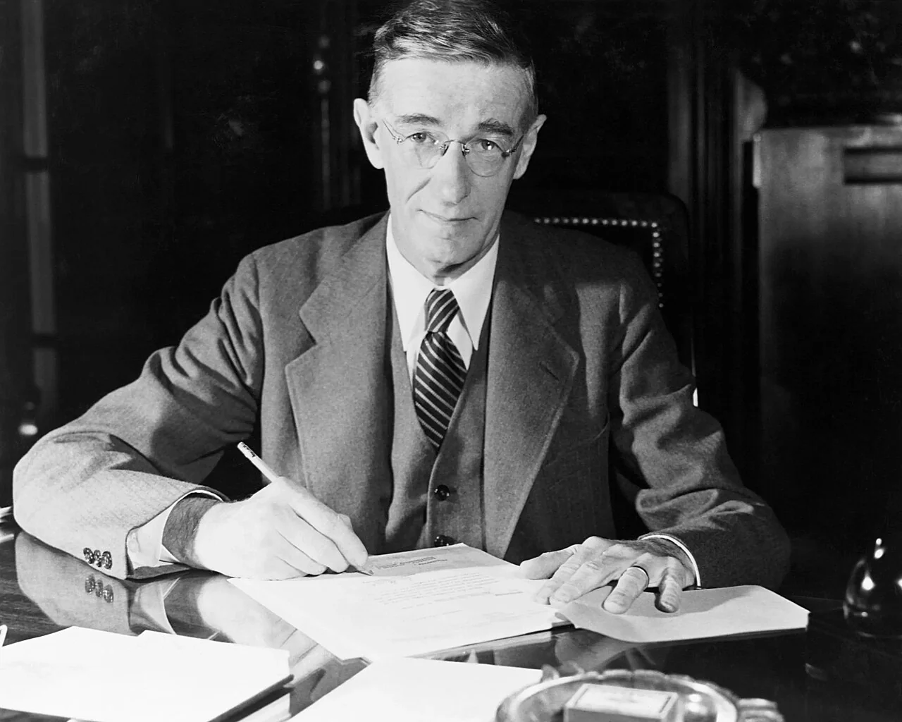
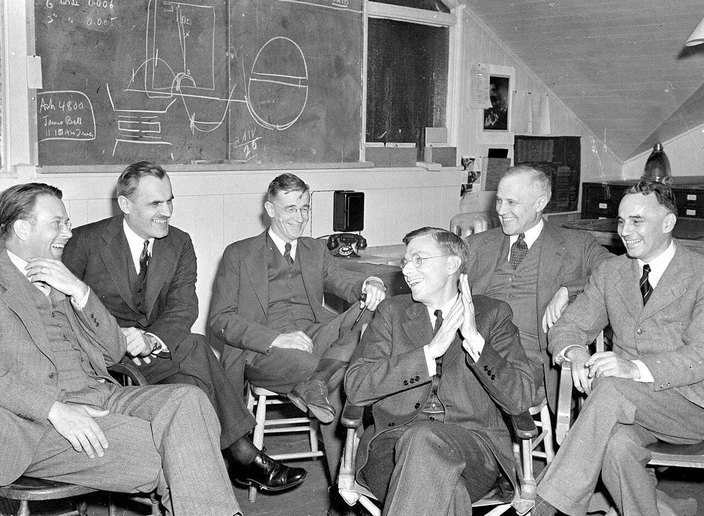
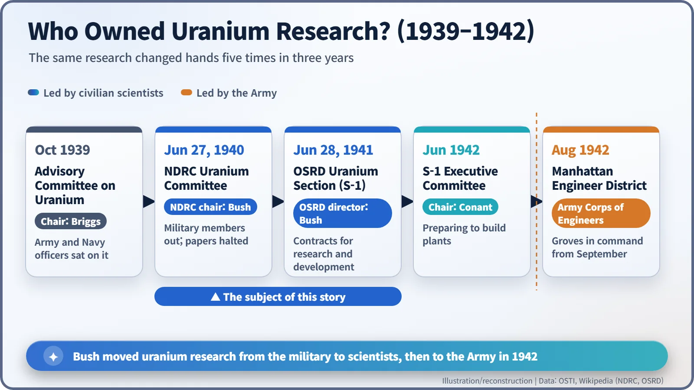
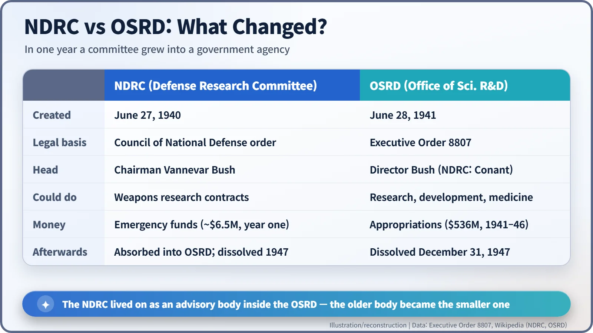

Nuclear History · 082
One Page, Fifteen Minutes, "OK – FDR" — Vannevar Bush, the NDRC and the OSRD
A one-page plan approved in minutes became the agency that mobilized American science for war and took charge of uranium research.
On June 12, 1940, as France was collapsing, engineer Vannevar Bush handed President Roosevelt a one-page plan and walked out with "OK – FDR" written on it. Within a year his National Defense Research Committee (1940) had grown into the Office of Scientific Research and Development (1941), the civilian agency that took charge of America's uranium research before the Army's Manhattan Project existed.
An "end run", by his own admission
"There were those who protested that the action of setting up NDRC was an end run, a grab by which a small company of scientists and engineers, acting outside established channels, got hold of the authority and money for the program of developing new weapons. That, in fact, is exactly what it was."
That confession comes from Vannevar Bush (1890–1974), writing in his 1970 memoir Pieces of the Action. In American football, an end run is the play that goes around the defensive line instead of through it. Before atomic bomb research ever acquired the name "Manhattan Project", it needed an institution to live in, and this engineer was the one who built it. [5]

The engineer who built a calculating machine
Bush was an electrical engineer from Everett, Massachusetts. At MIT he built the differential analyzer, a room-sized analog computer that solved differential equations with shafts and gears (construction began in 1927). In 1932 he became MIT's vice president and dean of engineering. On January 1, 1939, he moved to Washington as president of the Carnegie Institution, and that October he also became chairman of the National Advisory Committee for Aeronautics (NACA). He understood research, he understood administration and, rarer still, he understood how Washington worked. [6]
June 1940: France falls
On May 10, 1940, Germany launched its offensive in the west; on June 14, Paris fell. The United States was not yet at war, but the gap was obvious. Military laboratories were busy improving the weapons they already had, while the best minds in the universities had almost no connection to defense work.
On June 12, Bush met President Franklin D. Roosevelt, a meeting arranged through the president's close adviser Harry Hopkins. Bush brought a single sheet of paper describing a new agency. In less than fifteen minutes, the story goes, Roosevelt wrote "OK – FDR" on it. A letter dated June 15 appointed Bush chairman, and on June 27, 1940, the National Defense Research Committee (NDRC) formally came into being. It was created by an order of the Council of National Defense, a dormant World War I body revived for the purpose, which let Bush start work on presidential emergency funds without waiting for Congress to appropriate money. [6]
The committee had eight members including Bush: six civilians, among them Harvard president James B. Conant and MIT president Karl T. Compton, plus one representative each from the Army and the Navy.

A new home for the uranium committee
When the NDRC was created, Roosevelt transferred to it the Advisory Committee on Uranium, which had been chaired by Lyman Briggs of the National Bureau of Standards. Bush reorganized it as a scientific body. He removed the military members, barred foreign-born scientists from committee membership for security reasons, and blocked further publication of articles on uranium research. The U.S. Department of Energy's official history notes that, freed from dependence on the military, the effort gained "more influence and more direct access to money for nuclear research." The émigré scientists, it should be said, remained central to the laboratory work itself. [1]
The NDRC also worked in a new way. Instead of building government laboratories, it signed contracts with universities and companies and let the research happen where the researchers already were. The MIT Radiation Laboratory, which developed radar, was born this way.

A committee was not enough: enter the OSRD
Within a year the limits were clear. The NDRC could commission research, but its authority did not stretch to development, turning results into working prototypes, or to military medicine. So on June 28, 1941, Executive Order 8807 created the Office of Scientific Research and Development (OSRD). The order told it to "initiate and support scientific research on the mechanisms and devices of warfare" and on "medical problems affecting the national defense." [3]
Bush became director, reporting only to the president, and Conant took over as NDRC chairman. The older NDRC thus became an advisory body inside the OSRD, able only to recommend contracts to the director rather than approve them. A Committee on Medical Research was set up alongside it. The uranium committee became the OSRD Section on Uranium, soon known by a deliberately meaningless code name: S-1. [2]

The bomb was only one OSRD project
It is tempting to equate the OSRD with the Manhattan Project, but the atomic bomb was one task among many. Between 1941 and 1946 the OSRD managed about 2,500 contracts worth more than $536 million, covering radar, the proximity fuze (which made shells explode automatically near their target), mass production of penicillin and the identification of DDT as an insecticide. In the summer of 1942, as the bomb project moved toward building industrial plants, the Army took it over.
Historians judge the model differently. Some see a success story of rapid scientific mobilization; others point out that it bypassed normal procedures and concentrated research money in a handful of elite universities.
What it left behind
On November 17, 1944, Roosevelt asked Bush how the wartime experience could be carried into peacetime. Bush's answer, submitted to President Truman on July 5, 1945, was Science, the Endless Frontier. Calling basic research "the pacemaker of technological progress", the report fed directly into the founding of the National Science Foundation on May 10, 1950. The OSRD itself closed on December 31, 1947, but its formula (government pays, universities research) became the basic grammar of postwar science, nuclear research included. [4]